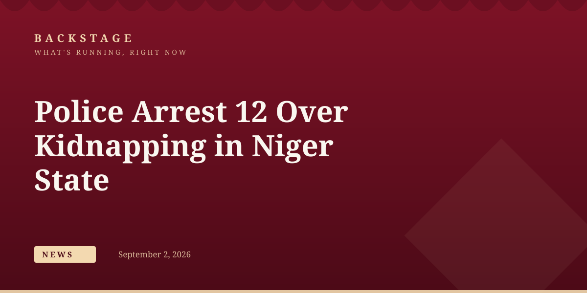

Police Arrest 12 Over Kidnapping, Armed Robbery in Niger State
news

The Niger State Police Command has arrested 12 suspects linked to kidnapping, armed robbery and other offences, following operations carried out between August 22 and 25.
The police in Niger State have arrested 12 suspects in connection with various criminal offences, including kidnapping, armed robbery, culpable homicide, motorcycle theft, thuggery and possession of illicit substances.
The state police command disclosed this in a crime bulletin issued by its spokesperson, Wasiu Abiodun, saying the arrests were made between August 22 and 25 in different parts of the state as part of ongoing efforts to tackle rising insecurity in the region.
Police said investigations into the suspects were ongoing, and that those found culpable would be charged to court in line with the law. The command reiterated its commitment to protecting residents and disrupting criminal networks operating within the state.